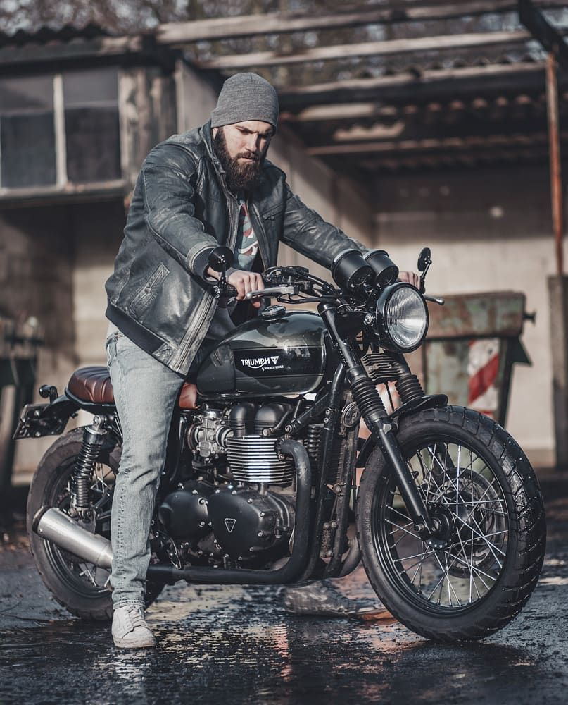

A Harley-Davidson é uma das marcas de motocicletas mais icônicas e reconhecidas mundialmente, conhecida por suas motos robustas, de estilo clássico e motor potente. Fundada em 1903 nos Estados Unidos, a Harley conquistou uma legião de fãs graças ao seu design inconfundível e ao som característico de seus motores V-twin. Além de simbolizar liberdade e rebeldia, a marca mantém uma forte cultura de comunidade entre seus proprietários, com eventos, encontros e um estilo de vida ligado à estrada.

A Royal Enfield é uma marca de origem britânica, com raízes que remontam ao século XIX, e que se destacou especialmente no mercado indiano, onde conquistou enorme popularidade. Conhecida por suas motocicletas clássicas, simples e duráveis, a Royal Enfield une um design retrô com tecnologia moderna, atraindo tanto motociclistas urbanos quanto aventureiros. Suas motos são reconhecidas pela facilidade de manutenção e pelo charme vintage, sendo uma ótima escolha para quem busca estilo aliado à funcionalidade.

A Triumph Motorcycles é uma fabricante britânica que representa a elegância, a performance e a inovação em motocicletas. Fundada em 1902, a Triumph se consolidou como uma marca premium, combinando tradição e tecnologia avançada para entregar motos versáteis, que vão desde modelos clássicos até esportivos e aventureiros. Conhecida por sua engenharia refinada e design sofisticado, a Triumph agrada motociclistas que buscam qualidade, estilo e desempenho em uma moto com personalidade marcante.
